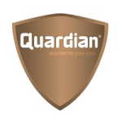

SPECIAL STEEL PLATES
Special steel plates are Armoured, Wear resistant and high yield strength plates used for applications such as armoured vehicles, wear resistant tools, material handling and mining. Q Steel stocks & supplies the following types of Foundation steel:
Armour/Ballistic Steel Plates
Quardian® is the brand name of the group of protection steel plates produced by NLMK Clabecq, Belgium, currently covering the hardness levels of 300, 400, 440, 500, 550 and 600 Brinell with these last two hardnesses in limited range at the moment. High Protection Steel Quardian® ballistic properties are the result of specific Chemistries developed in house, a unique process of rolling, quenching and tempering treatment in our ultra-high-performance facilities. The different proposed combinations of hardness and thickness ensure that you will always find the Quardian® adapted to your desired protection.

Quardian® can be used in numerous applications to protect life where it may be threatened by gunshots or explosions.
-
Protection of life :
- Armoured civilian cars
- Patrol vehicles
- Armoured personnel carrier
- Anti-riot trucks
- Protected buildings (shelters, guardhouses)
- Secured containers Protection of Valuables :
- Safe
- Cash & Transit Others
- Shooting stands
- Ship and frigate Quardian® is tested in independent European Laboratories according to EN 1522, VPAM, STANAG 4569, MIL 46100, and other standards. For information on plate thickness requirement vs protection level, please consult us.
 Wear/Abrasion Resistant Plates
Wear/Abrasion Resistant Plates


 High Yield Strength Steel
High Yield Strength Steel